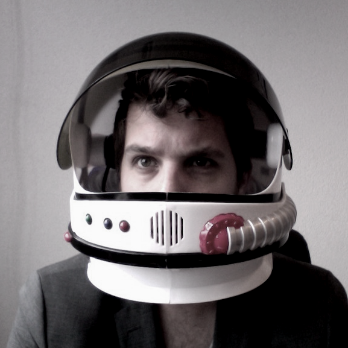

Vakidioten is het eerste woord wat ons te binnenschiet als we Frozen Rockets moeten omschrijven. Als we niet aan het werk zijn voor klanten, dan zijn we wel bezig met eigen projecten of bezoeken we conferenties of workshops.
Frozen Rockets is een klein bedrijf, maar we doen het niet alleen. Voor elk project kiezen wij de mensen om tot het beste resultaat te komen. Op die manier kunnen
 Frontend Designer, Interaction Designer
Office Administrator
Responsive design houdt ook rekening met apparaten die we nu nog niet kennen. Ik help u graag hierover na te denken.
Ik ben inzetbaar als ervaren frontend developer in projecten waar een goede structuur van HTML en CSS vereist is.
Mijn uitgangspunt is dat een website toegankelijk moet zijn voor een zo groot mogelijk publiek. Ik vertel u hier graag meer over.